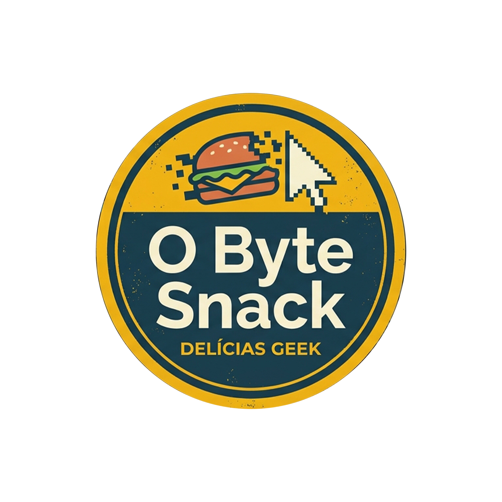

Bem-vindo ao O Byte Snack! Aqui, nós sabemos que `código + café = magia`. Nascemos para ser o porto seguro de desenvolvedores, estudantes e entusiastas de tecnologia que precisam recarregar as energias entre um commit e outro. Aqui, o seu break não é apenas uma pausa — é um upgrade na sua rotina! --- ### O que servimos no nosso servidor? Menu Debug: Lanches rápidos, práticos e sem *bugs*, feitos para comer enquanto você digita ou debate uma arquitetura de código. Café de Alta Performance: Doses concentradas de cafeína para manter a sua lógica afiada e evitar o estresse do syntax error. Ambiente Tech-Friendly: Tomadas em todas as bancadas, Wi-Fi de altíssima velocidade e uma comunidade que fala a mesma linguagem que você. > Status: `200 OK` — O seu apetite foi atendido com sucesso. Seja para um café rápido antes daquela daily, um almoço leve ou um snack no meio da madruga de programação, o O Byte Snack é o seu ponto de encontro oficial. ###Vem fazer o checkout do seu pedido!
